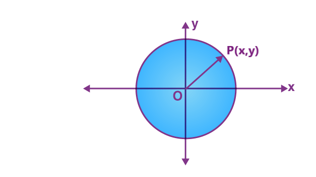
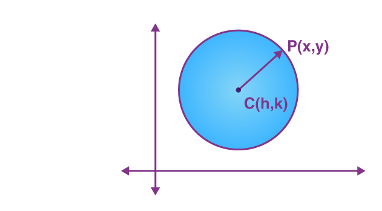

EQUATIONS OF A CIRCLEThe standard equation of a circle is given by: (x-h)² + (y-k)² = r² Where (h,k) is the coordinates of center of the circle and r is the radius. Before deriving the equation of a circle, let us focus on what is a circle? A circle is a set of all points which are equally spaced from a fixed point in a plane. The fixed point is called the center of the circle. The distance between the center and any point on the circumference is called the radius of the circle. In this article, we are going to discuss what is an equation of a circle formula in standard form, and find the equation of a circle when the center is the origin and the center is not an origin with examples.
What is the Equation of a Circle?A circle is a closed curve that is drawn from the fixed point called the center, in which all the points on the curve are having the same distance from the center point of the center. The equation of a circle with (h, k) center and r radius is given by: (x-h)² + (y-k)² = r² This is the standard form of the equation. Thus, if we know the coordinates of the center of the circle and its radius as well, we can easily find its equation. Example: Say point (1,2) is the center of the circle and radius is equal to 4 cm. Then the equation of this circle will be: (x - 1)² + ( y- 2)² = 42 (x² −2x + 1) + (y² − 4y + 4) = 16 X² + y² −2x−4y-11 = 0 Function or NotWe know that there is a question that arises in case of circle whether being a function or not. It is clear that a circle is not a function. Because, a function is defined by each value in the domain is exactly associated with one point in the codomain, but a line that passes through the circle, intersects the line at two points on the surface. The mathematical way to describe the circle is an equation. Here, the equation of the circle is provided in all the forms such as general form, standard form along with examples. Equation of a Circle When the Centre is OriginConsider an arbitrary point P(x, y) on the circle. Let ‘a’ be the radius of the circle which is equal to OP. We know that the distance between the point (x, y) and origin (0,0)can be found using the distance formula which is equal to- √[x² + y²] = a Therefore, the equation of a circle, with the center as the origin is, x² +y² = a² Where “a” is the radius of the circle. Alternative MethodLet us derive in another way. Suppose (x,y) is a point on a circle, and the center of the circle is at origin (0,0). Now if we draw a perpendicular from point (x,y) to the x-axis, then we get a right triangle, where radius of the circle is the hypotenuse. The base of the triangle is the distance along x-axis and height is the distance along the y-axis. Thus, by applying the Pythagoras theorem here, we get: x² + y² = radius² Equation of a Circle When the Centre is not an Origin
Let C(h, k) be the centre of the circle and P(x, y) be any point on the circle. Therefore, the radius of a circle is CP. By using distance formula, (x-h)² + (y-k)² = CP2 Let radius be ‘a’. Therefore, the equation of the circle with center (h, k)and the radius ‘a’ is, (x-h)² + (y-k)² = a² which is called the standard form for the equation of a circle. 
General form of Equation of a CircleThe general equation of any type of circle is represented by: x² + y² + 2gx + 2fy + c = 0, for all values of g, f and c. Adding g² + f² on both sides of the equation gives, x² + 2gx + g² + y² + 2fy + f² = g² + f² − c ………………(1) Since, (x+g)² = x² + 2gx + g² and (y+f)² =y2 + 2fy + f² substituting the values in equation (1), we have (x+g)² + (y+f)² = g² + f² −c …………….(2) Comparing (2) with (x−h)² + (y−k)² = a², where (h, k) is the center and ‘a’ is the radius of the circle. h=−g, k=−f a² = g² + f²−c Therefore, x² + y² + 2gx + 2fy + c = 0, represents the circle with centre (−g,−f) and radius equal to a² = g² + f²− c.
Polar Equation of a CircleTo find the polar form of equation of a circle, replace the value of x = r cos θ and y = r sin θ, in x² + y²= a². Hence, we get; (r cos θ)²+ (r sin θ)²= a² r²cos² θ + r² sin² θ = a² r² (cos²θ + sin²θ) = a² r² (1) = a² [Using trigonometry identity] r = a is the polar equation of a circle with radius a and center at the origin (0,0).
Video Lessons on Circle
Other Circle FormulasHere are some formulas are given for circle in terms of radius.
How to Find the Equation of the Circle?To find the equation of a circle given the radius and center of the circle, we can directly put the values in the standard form of the equation. (x-h)² + (y-k)²= r² Here, some solved problems are given to find the equation of a circle in both cases such as when the center of a circle is origin and center is not an origin is given below. Solved ExamplesExample 1: Consider a circle whose center is at the origin and radius is equal to 8 units. Solution: Given: Centre is (0, 0), radius is 8 units. We know that the equation of a circle when the center is origin: x²+ y²= a² For the given condition, the equation of a circle is given as x²+ y²= 82 x² + y² = 64, which is the equation of a circle Example 2: Find the equation of the circle whose center is (3,5) and the radius is 4 units. Solution: Here, the center of the circle is not an origin. Therefore, the general equation of the circle is, (x-3)²+ (y-5)²= 42 x²– 6x + 9 + y²-10y +25 = 16 x²+y²-6x -10y + 18 =0 Example 3: Equation of a circle is x²+y²−12x−16y+19=0. Find the center and radius of the circle. Solution: Given equation is of the form x²+ y2²+ 2gx + 2fy + c = 0, 2g = −12, 2f = −16,c = 19 g = −6,f = −8 Centre of the circle is (6,8) Radius of the circle = √[(−6)2² + (−8)² − 19 ]= √[100 − 19] = = √81 = 9 units.
Practice Questions on Equation of Circle
Frequently Asked Questions on Equation of a CircleQ1
What is the equation for a circle?The equation for a circle is given by:
(x-h)² + (y-k)² = a² Where (h,k) is the center and a is the radius of the circle. Q2
What are the formulas for circles?The circumference of a circle is equal to 2 (pi) of radius or pi of diameter.
The area of a circle is equal to the pi of radius-squared. Q3
What is the equation of a circle when the center is at the origin?At origin, the value of coordinates is (0,0), therefore, the equation of circle becomes:
(x-0)²+ (y-0)²= r² x² + y² = r² Q4
If (x-4)² +(y+7)²=9 is the equation of circle, then what is the center of circle?Given, (x-4)²+(y+7)²=9 is the equation of circle. If we compare this equation with the standard equation we get:
(x-h)²+(y-k)²= a² h=4 and y = -7 Therefore, (4,-7) is the center of circle Q5
How do we know if an equation is the equation of circle?If x and y are squared and the coefficient of x2 and y2 are same, then it is equation of circle. For example, 3x² +3y² = 12 is a circle’s equation.
|
|
|---|


.jpeg)
.jpeg)